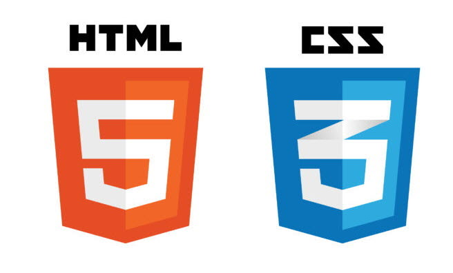

CSS
CSS(Cascading Style Sheets)는 마크업 언어가 실제 표시되는 방법을 기술하는 언어로, HTML과 XHTML에 주로 쓰이며, XML에서도 사용할 수 있다. W3C의 표준이며, 레이아웃과 스타일을 정의할 때의 자유도가 높다.
마크업 언어(ex: HTML)가 웹사이트의 몸체를 담당한다면 CSS는 옷과 액세서리처럼 꾸미는 역할을 담당한다고 할 수 있다. 즉, HTML 구조는 그대로 두고 CSS 파일만 변경해도 전혀 다른 웹사이트처럼 꾸밀 수 있다.
